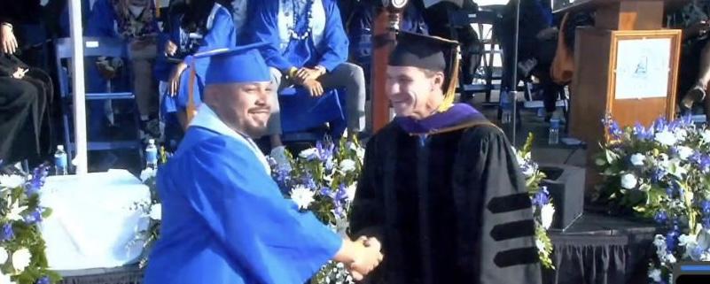
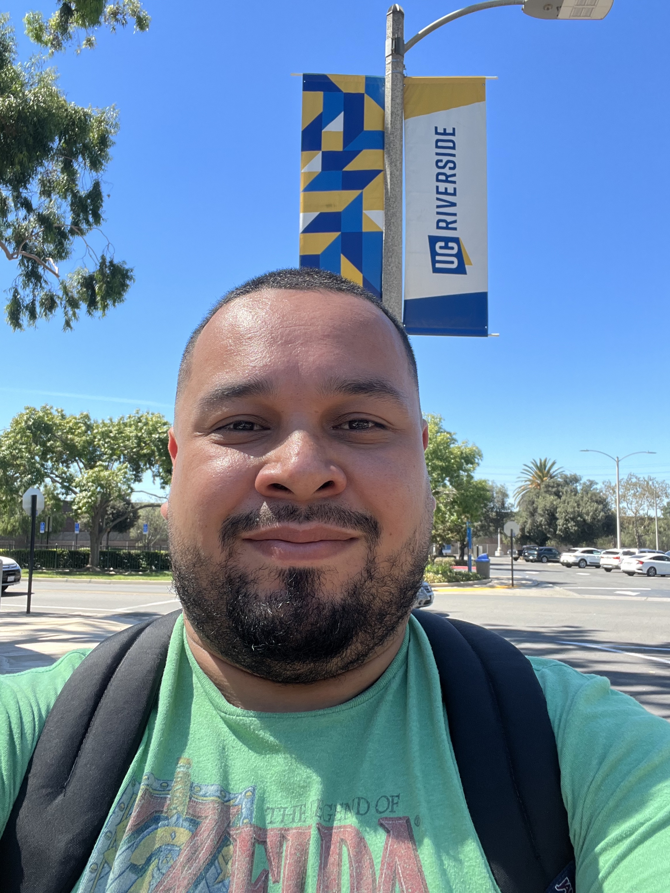
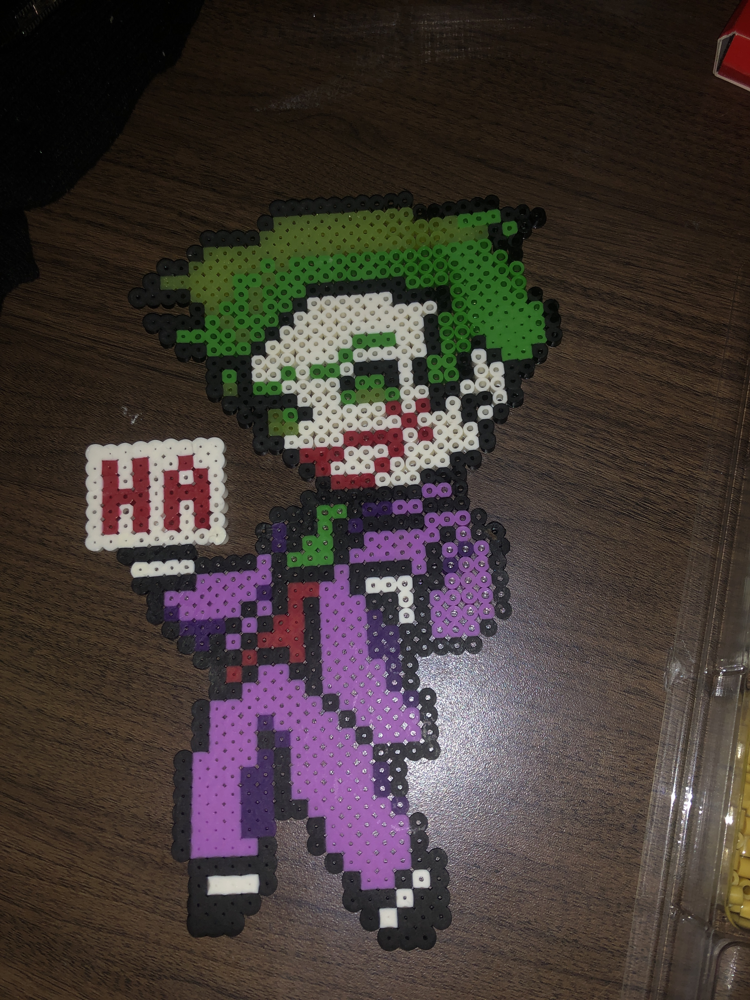
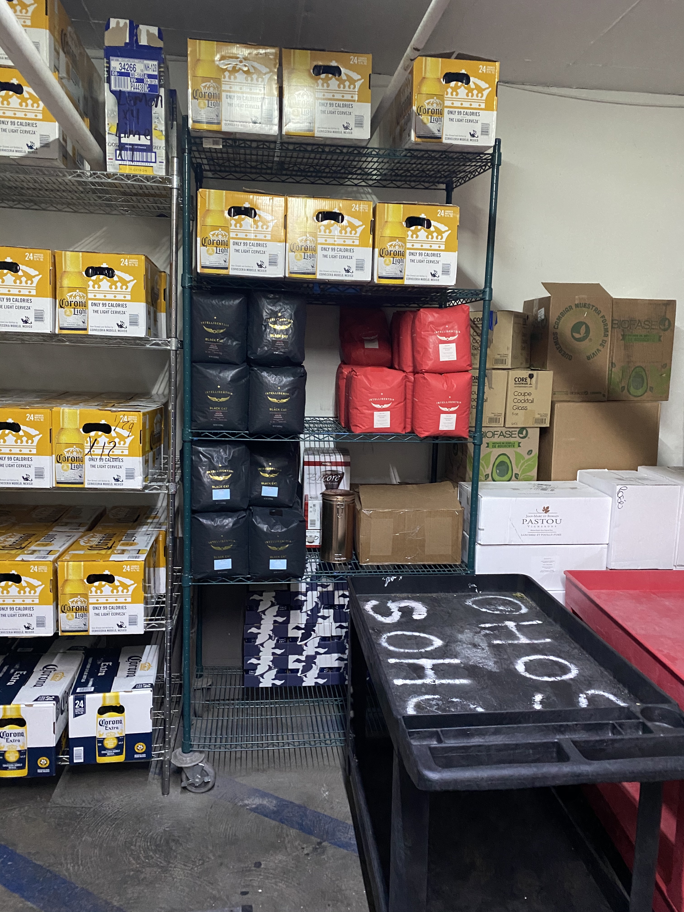
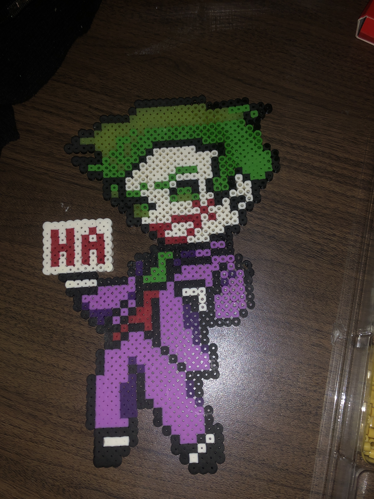
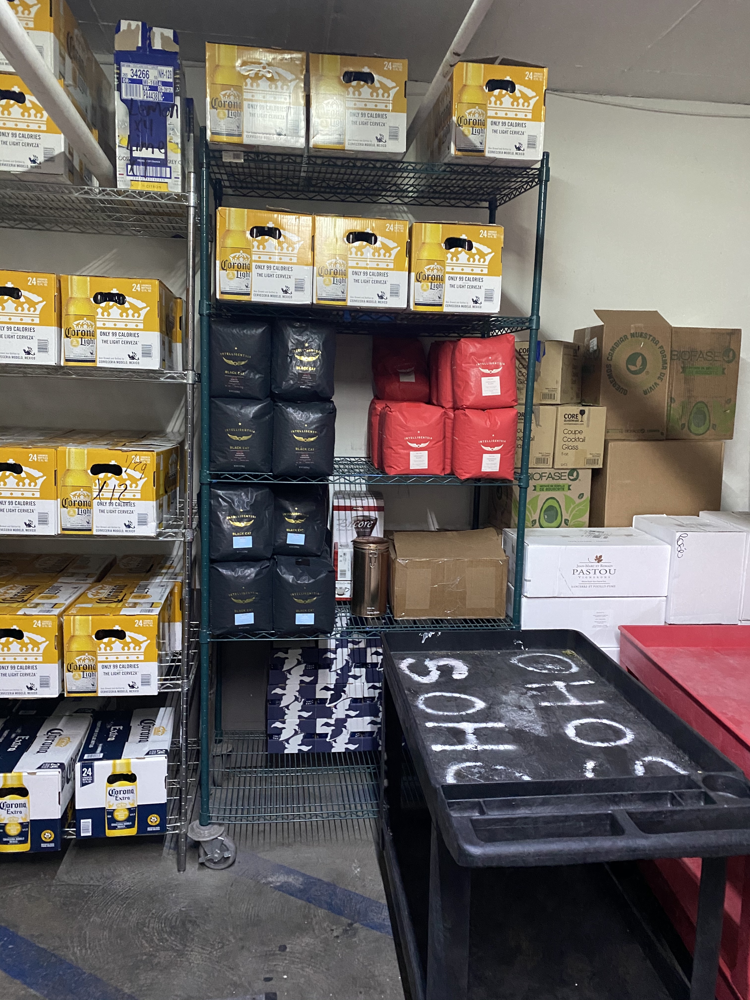

William Alegria
My name is William Alegria, and I am a Sociology Major. I am a first-generation college student, who has a family lineage that derives from Usulután, El Salvador. I was born in Los Angeles, Ca., and have lived in southern California my whole life. I am the last child of family of five children, and I am only the second person to go to college in my family. I derive from a family of immigrants, and want to as a first-generation student, I am considered one of the trail blazers of my family. I love sports, I am an avid Lakers, Dodgers, Saints, and LAFC fan. I love music, and dedicate time to make sure I go to at least one music festival a year to hear live music from various music artist. I have various type of work experience, as I have worked in various types of fields since I graduated high school. Some highlights of my careers are Asset Protection for Sears and Toys R Us., Field Contractor for an advertisement firm, and Mentor for El Camino College. I love to learn in each job that I work in, and I am always open to criticism, since I know it will only make me better at my craft.
I attended Manual Arts Senior High School and graduated in 2006. I then took a hiatus from school to work for a couple of years till I felt I was ready to go back to school. After a few unsuccessful attempts to go back to school, during covid, I finally successfully integrated back to being a full-time student. I managed to earn my Associates of Art in Sociology where I then got accepted to the University of California, Riverside. I graduated from El Camino College with my associate degree and transferred into UC Riverside during the Summer of 2022. I am 4th year transfer student, starting my second and last year at UC Riverside. I have a 3.43 GPA at the moment, and I have to goal to graduate with the honors of Magna Cum Laude or above.
My plan after I graduate is to get a job as a city planner for my local government to help create programs for inner city children. As a child I grew up right in the center of Los Angeles, Ca. which used to be known as South Central Los Angeles. During my childhood my neighborhood was riddled with various types of crime from vehicle break ins, home intrusion, to full on robbery. My environment was nowhere near fit for a child to grow up in, or find influence in. My goal is to create more programs for inner city children, so that if they ever end up the same position as I was, they will have different alternatives to look for as a way to find inspiration and resources for school. My plan is to not only have programs but educate everyone in my local neighborhood about programs that help out struggling families and help bridge the gap for underprivilege children.
Experience
Clerk
• Data Input
• Monitor and answering phones
• Experience with Excel, Compliance Manager, and Paycom
Peer Mentor
• (1) 3-4 hours sitting in on course lectures
• (2) 1-2 hours facilitating PASS sessions
• (3) 2 ½-3 hours dedicated to session planning and meetings with professor
Receiver
• Handling and processing of stock in a warehouse and/or retail environment
• Primary duty is to maintain an efficient flow of merchandise,
• documenting, storing, locating and distributing stock from warehouse to the front of house
Education
UC Riverside
El Camino College
University of California Riverside
Portfolio





 